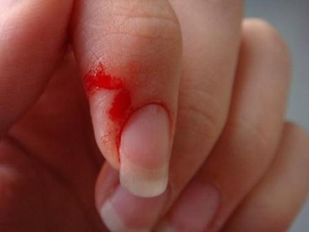
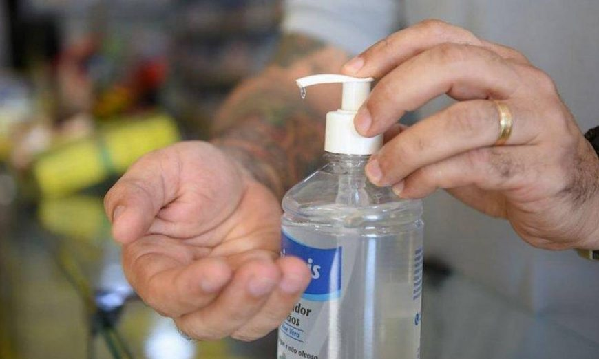
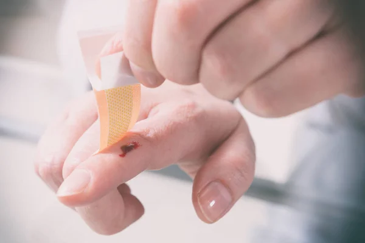

Primeiros-Socorros
Home
Contatos
Instruções:
 Fazer a limpeza do local com água corrente, torneira, garrafa ou rios
(COM RISCOS)
. Com algum sabão neutro, ph7; em falta de água, álcool 70% é uma opção. 
E coloque uma bandagem, para evitar infecções. 